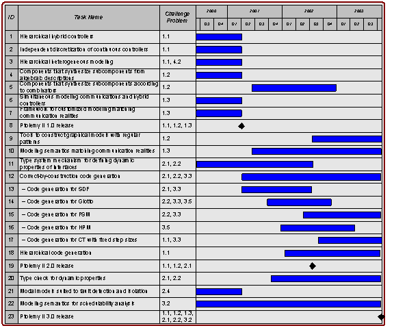

Coordination
Plan
Mobies
Phase 1, UC Berkeley
Edward
A. Lee
June
12, 2001
The
following Gantt chart illustrates the planned schedule of technology delivery
of capabilities. The challenge problems are listed below for reference, and a
description of each task is given.

Table
of Challenge Problems
1.
Modeling
1.1 Multiple-view modeling
1.2 Automated composition of sub-components
1.3 Communication models
2.
Model Analysis
2.1 Automatic test generation
2.2 Verification
2.3 Synthesis of switching
2.4 Performance
3.
Implementation
3.1 Test vector generation
3.2 Schedulability analysis
3.3 Code generation
3.4 Code debugging and testing
3.5 RTOS generation
3.6 Allocation to distributed platforms
4.
Integration
4.1 Model translation
4.2 Integration of different models of
computation
4.3 Tool Integration
4.4 Software/hardware Integration
Description
of capabilities
All
capabilities will be demonstrated and delivered in executable software built on
the Ptolemy II platform. Note that some of these capabilities, as noted below,
have been developed under other programs. They are included here because of
their pertinence to the automotive OCP.
1.
A
mechanism for hierarchically modeling hybrid controllers.
Schedule: done (mostly under Composite CAD program).
2.
A
mechanism for discretizing continuous-time models at multiple independent
sample rates. This gets us from “level 1” to “level 2” as posed by challenge
problem 1.1.
Schedule: done.
3.
A
mechanism for hierarchically combining multiple modeling techniques, where for
example a component representing a model of a software realization of a
controller realized in an RTOS can be embedded in a continuous-time model of
the plant and controller working together.
Schedule: done (mostly under Composite CAD program).
4.
Components
that synthesize complex models from algebraic descriptions of functionality.
Schedule: done (under SEC).
5.
Components
that synthesize complex models from particular combinators.
Schedule: started. We expect the first releasable version by mid 2002, final
versions by the end of 2002.
6.
A
framework that can simultaneously model communication networks (as in Opnet)
and contollers and plants (as in Simulink), each using a modeling strategy
suited to the problem being modeled. What we are delivering is ability to
hierarchically compose distinct modeling strategies, not the libraries of
modeling components that are needed to construct nontrivial network models.
Schedule: done (mostly under Composite CAD program).
7.
A
framework that supports customization of the modeling semantics to match the
realities of the communication network being used. For example, if a
communication network with unreliable delivery is being used, then one might
wish to construct a model of application by connecting components with
unreliable communication links.
Schedule: done (mostly under Composite CAD program).
8.
Milestone:
Ptolemy II 1.0 release. This release was completed in March 2001 and includes
all the capabilities that are marked “done” here.
9.
Tools
that help in the construction of graphical models that follow regular patterns.
These are visual renditions of the combinators above.
Schedule: planned for end of 2003.
10.
Particular
modeling semantics that tolerate communication latencies in communication
systems by defining communication to be delayed. Giotto is one first example of
such a modeling semantics. We are working on at least one other one that does
not require the periodic structure of Giotto.
Schedule: started. Expect first versions released in mid 2002. Elaborations
in 2003.
11.
A
mechanism for defining dynamic properties of interfaces (such as that new
inputs are required on all ports to react).
Schedule: first version done using FSMs and reported in
http://ptolemy.eecs.berkeley.edu/publications/papers/00/systemLevel/. A second
version interface automata (by Luca de Alfaro) has also been done, but not yet
reported. Expect completion by mid 2002.
12.
Generators
that produce code that is “correct by construction” in that it matches the
(narrow) semantics of a well-understood model that does not therefore require
elaborate verification. Giotto and synchronous dataflow, for example, are
modeling frameworks with sufficiently narrow semantics that strong properties
can be asserted about any correct-by-construction implementation.
Schedule: started. Complete by end of 2003.
13.
Code
generation for SDF.
Schedule: concept demonstration completed by adapting Titanium compiler. We
are rearchitecting the framework to use the Soot tools from McGill, and expect
a new code generator by the end of 2001.
14.
Code
generation for Giotto.
Schedule: by mid 2002.
15.
Code
generation for FSM. This will allow for hierarchical code generation of hybrid
controllers.
Schedule: by end of 2003.
16.
Code
generation for HPM (hierarchical priority-driven multitasking), developed under
SEC. This is our principle “RTOS generation” strategy.
Schedule: by end of 2002.
17.
Code
generation for CT with fixed step sizes, providing easy migration from
continuous controller designs to discrete versions.
Schedule: by end of 2003.
18.
Hierarchical
code generation. This will allow heterogeneous models to be nested
hierarchically with code generators for each layer producing atomic components
for the layer above.
Schedule: to start in 2002. Complete by end of 2003.
19.
Ptolemy
II 2.0 release. This will include all capabilities completed in time.
20.
A
mechanism for composing interface definitions to perform “type check”
statically.
Schedule: started. First version expected by mid 2002. A complete theory and
software support is expected by end 2003, perhaps.
21.
Modal
models suited to fault detection and isolation.
Schedule: done (mostly under Composite CAD program).
22.
Modeling
semantics such as Giotto where schedulability analysis is greatly simplified by
disciplining the inter-component interactions (data dependencies and
synchronization). This will include modeling semantics that are applicable to
other sorts of problems than Giotto, such as event-based problems.
Schedule: This is pretty open-ended work, hard to pin down to a schedule.
Under the SEC project, we have developed an RTOS domain in Ptolemy II that has
semantics somewhere between Giotto and a conventional RTOS. We are studying
this to see how to adapt it to the automotive OEP scenario. Complete by end of 2003.
23.
Ptolemy
II 3.0 release. This will be the final release under the Mobies project, and
will include all capabilities developed.
Integration
with other Mobies technology components
Code
generators will produce code that can execute on OEP platforms. In addition,
integration is possible at the tool level. Our platform for experimentation is
Ptolemy II, which provides extensive infrastructure and an open architecture
that are not available on any competing alternative. Ptolemy II is relatively
easy to integrate to and to customize.
Risk
analysis and risk management plan
The principal risk is that many of the Mobies participants are focused on a competition between tools, such as Simulink, Teja, and the Boeing OEP. Capabilities such as we describe here cannot be developed with Simulink without considerable cooperation from The MathWorks. However, the principle use of Simulink leverages real-time workshop to generate code to execute on the control platform. Our work is to develop technology that might eventually replace or enhance RTW in this role. The Boeing OEP is a suitable target for code generation. We currently have no strategy for working with Teja.
The use of Java in Ptolemy II and in the code generation framework creates its own risks. We believe that the code generation framework can be adapted to synthesize C code for execution on embedded microcontrollers, in case Java does not take off in embedded platforms. We have subcontracted the University of Maryland to help us explore this option.
Dialog
with Automotive OEP Team
The automotive OEP team has raised the following questions about this plan:
These are valid an useful questions, to which we reply: